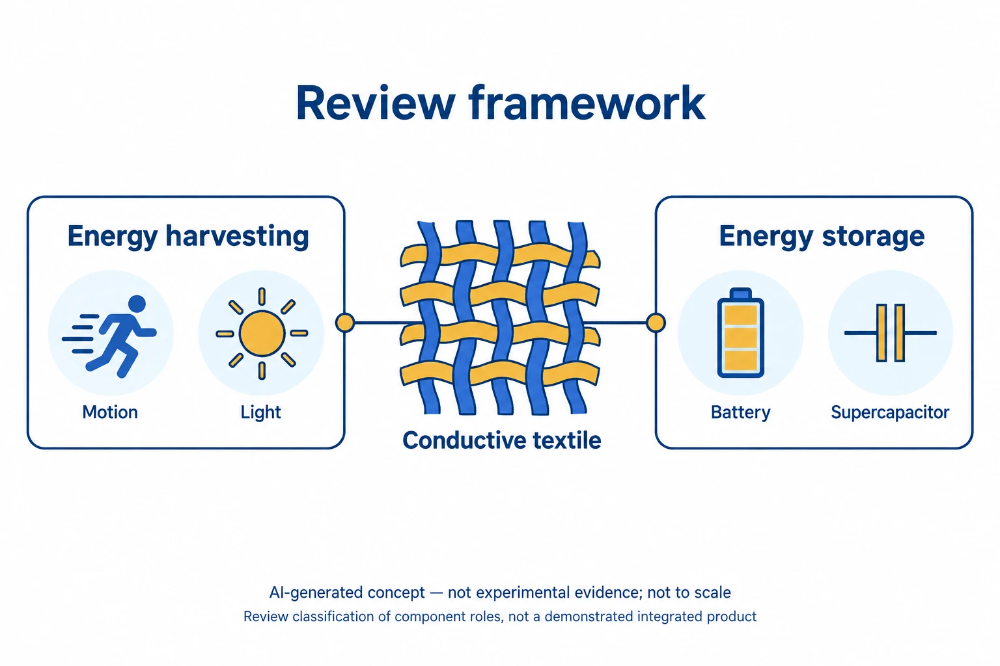

연구의 배경
전도성 직물로 에너지를 수확하거나 저장하는 부품을 만드는 원리와 제작법을 정리한 종설입니다. 직물의 유연성과 전기 전도성을 에너지 소자 설계의 요구 조건과 연결해 살펴봅니다.
어떤 연구를 정리했나요?
이 리뷰는 전도성 직물과 전자 부품의 제작법을 정리하고, 직물 기반 에너지 수확·저장 장치의 원리와 한계를 다룹니다.
직물의 유연성과 전도성이 에너지 장치 설계에 어떻게 연결되는지 함께 살펴볼 수 있는 자료입니다.

AI로 만든 비축척 개념도입니다. 전도성 직물과 에너지 수확·저장 부품의 역할을 구분했습니다. 동작, 빛, 배터리와 슈퍼커패시터 기호는 기능을 나타내며, 모든 기능을 갖춘 자가전원 의류나 실험 결과를 보여 주지는 않습니다.
개념의 범위는 Crossref와 Europe PMC/PubMed 초록입니다. 리뷰 본문에 대한 설명은 포함하지 않으며, 효율, 전력, 용량, 세탁 수명이나 실제 소자 구조를 재현하지 않습니다.
논문 원그림을 복제한 이미지가 아니며, 원그림 재사용 허가를 의미하지 않습니다.
남은 질문과 한계
저장·수확 소자까지 포함했을 때 착용성과 실제 공급 전력을 함께 유지할 수 있는지는 더 살펴볼 질문입니다.
비교할 때 살펴볼 조건
전력과 에너지를 면적 또는 질량으로 나누는 기준, 입력 자극, 저장 조건과 직물 변형 조건을 구분해 비교해야 합니다.
함께 읽을 연구
Highly stretchable electric circuits from a composite material of silver nanoparticles and elastomeric fibres
관련 논문의 초록은 은 나노입자–SBS 섬유 매트의 신장 중 전도 경로와 회로 제작을 다룹니다. 리뷰에서 다루는 전도성 직물의 구체적인 재료 사례입니다.
매트의 전도도만으로 에너지 수확·저장 시스템 전체의 성능을 판단할 수는 없습니다.
초록을 참고한 소개RESEARCH NEWS
연구 소식
해설에 사용한 자료
이 해설은 논문 본문과 원그림을 참고합니다. 보충자료와 원자료의 별도 검토는 완료하지 않았습니다. 검토 논문에 인용된 개별 연구의 전문을 모두 읽은 것은 아닙니다.